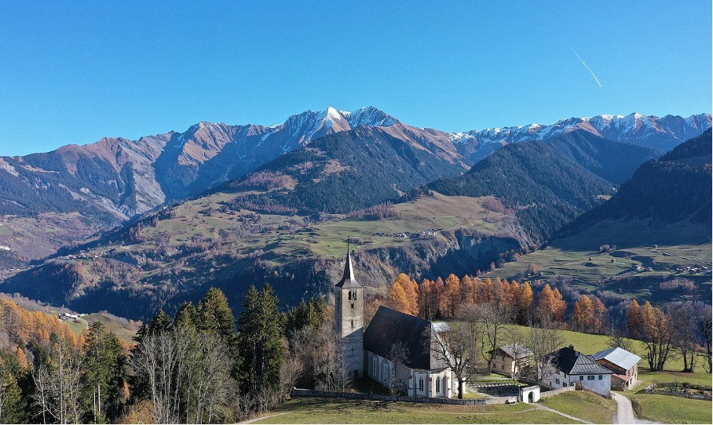
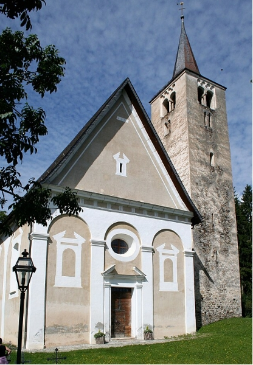

David Plüss zum 60. Geburtstag
Die Kirche liegt ein paar hundert Meter südlich von Vella, dem Hauptort der Val Lumnezia, dem grössten Seitental der Surselva. Der Ort heisst Pleif.
Die katholische Kirche Pleif mit Blick auf die Pitasch, Duvin und Camuns. (Bild: Adrian Michael 2020: Wikimedia Commons)
Ältester Kultort des Tals
Die Kirche in Pleif ist das älteste Gotteshaus des Tals. Urkundlich erwähnt wird sie in einem karolingischen Verzeichnis von ca. 840 als ecclesia plebeia ad San Vincentium (Kirche für das Volk zu San Vincentium). Der Name «Pleif» leitet sich von Plebs ab. Im Rätoromanischen hat «Pleiv» die Bedeutung von Kirchgemeinde. Das Gotteshaus des heiligen Vinzenz war jahrhundertelang die Hauptkirche des Tals, wo man im Friedhof die Toten von Vals bis Vrin zur letzten Ruhe bettete. Das Kirchengebäude bildet mit Friedhof, Pfarr- und Diensthaus sowie den Ökonomiegebäuden eine geschlossene Hofeinheit. Kommt man von Ilanz talaufwärts, ist der Turm ein Augenfang – im Hintergrund die markante Spitze des Piz Terri. Aber auch von der anderen Talseite, vom Berg oder vom Pass Lumbrein her ist die Kirche zu sehen. Wenn man Linien zöge – was in gewissen Kreisen, die sich mit Kraftorten beschäftigen, durchaus beliebt ist – würde Pleif die Mitte der Talschaft bilden. Aber Pfleif ist nicht nur geografisch gesehen zentral. Es ist auch das religiöse Herz oder der spirituelle Nabel, der älteste Kultort im Tal. Manche sagen, Rituale haben hier aussergewöhnlich viel Kraft. Vor dem südlichen Friedhofeingang steht ein Stein mit grosser Schale. Er könnte bereits in prähistorischer Zeit als Frucht- und Getreidemörser, vielleicht auch als Kultstein, gedient haben.
Bewegte Baugeschichte
Wie Grabungen von 1982/83 zeigen, stand hier um 800 eine Kirche mit drei Apsiden, das heisst drei im Grundriss halbkreisförmiger Raumteile, die an den Hauptraum anschlossen. Im Verlaufe des 12. Jahrhunderts entstand auf den Fundamenten der karolingischen Kirche ein romanischer Neubau. In der Zeit um 1100 wurde der Turm gebaut. Man hat ihn aus statischen Gründen von der Kirche abgerückt. Er ist mit dem Kirchenchor durch einen Gang verbunden. Um 1500 wurde der Chor im Osten abgebrochen und an seiner Stelle eine gerade Mauer erstellt. Heute steht die Eingangsfassade an dieser Stelle. Das Gebäude ist nicht geostet. Das steil abfallende Gelände im Osten verhinderte eine Vergrösserung des Chors. Erst in der Barockzeit wurde die Ostwand um eine Mauerbreite nach Osten versetzt, der Eingang wurde zugemauert und durch eine Türe in der Mitte der Wand ersetzt. Das Hauptportal kam an die Ostwand zu liegen. Später wurde die Sakristei nach Süden verlegt. Die Baugeschichte ist ziemlich bewegt. Im Laufe der Jahrhunderte hat die Gemeinde mehr als eine Kehrtwende vollzogen.
Ansicht von Osten. (Bild: Adrian Michael 2010: Wikimedia Commons)
Sitzstreik
Früher kamen die Gläubigen in stundenlangen Fussmärschen zur Messe.
Heute ist der Friedhof rund um die Kirche ein Magnet für alle, die ihre
Toten besuchen, aber die meisten Touristen lassen Pleif links liegen. Es
ist ruhig hier. Dabei gäbe es im Inneren viel zu sehen – oder nicht mehr
zu sehen. Zum Beispiel die Mitglieder der einflussreichen Familie de
Mont, die unter mächtigen Grabsteinen begraben sind. Im Inneren gibt es
den früh- bis spätbarockem Glanz und Prunk zu sehen, der einer
reformierten Seele nichts oder wenig bedeutet. Doch für die
interessierten Betrachter:innen gibt es spannende Details zu entdecken.
Zum Beispiel Gedenktafeln für tapfere Frauen und gefallene
Freiheitskämpfer, ein verwaistes Kruzifix und kuriose Drachen. Damit hat
es folgende Bewandtnis:
Das Val Lumnezia war im 14. Jahrhundert Schauplatz einer von Frauen
vollbrachten Heldentat. 1352 haben wehrhafte Lugnezerinnen in der
Schlacht bei Porclas das Tal des Lichts während der Belmonter Fehde
gegen die Grafen von Werdenberg-Sargans erfolgreich verteidigt. Nach der
Überlieferung durften danach die Frauen in der Kirche zu Pleif rechts
sitzen und zuerst zur Kommunion gehen – als Anerkennung dafür, dass sie
den Feind in die Flucht geschlagen haben sollen.
Si non e vero e bon trovato! (Wenn es auch nicht wahr ist, so ist
es gut erfunden.) Die Historikerinnen und Historiker sind nüchterner.
Sie erklären die ungewohnte Sitzordnung mit der Verlagerung des
Kirchenchors von Ost nach West um 1500. Offensichtlich behielten die
Frauen auch nach dieser Kehrtwendung ihre Seite und sassen deshalb
rechts statt wie üblich links.
Die Kombination der beiden Geschichten gefällt – eine Wende, bei der es
zu einem Seitenwechsel kommt, weil die Frauen einen Sitzstreik machen.
Das ist im Tal des Lichts der Fall. In den meisten Kirchen und Kapellen
dominieren (!) Männerstatuen auf Bildern und Altären. Nicht so in der
Val Lumnezia. Im Nachbardorf Degen sind auf dem Hauptaltar sieben
Statuen von heiligen Frauen – eine davon ist die heilige Margareta mit
dem Fuss auf dem gebändigten Drachen. Vielleicht hat die ältere Legende
der Drachenbändigerin und die Geschichte vom Sieg der Frauen den
Sitzstreik inspiriert?
Ralph Kunz ist Professor für Praktische Theologie mit den Schwerpunkten Predigt, Gottesdienst und Seelsorge an der Theologischen Fakultät der Universität Zürich.
Weitere Artikel von {{ author.author }} finden Sie hier:
Zur Vertiefung:
- Seifert, Ludmila / Dosch, Leza: Kunstführer durch Graubünden, Zürich 2008, 190.
- Zeller, Willy: Kunst und Kultur in Graubünden, Bern 1993, 84.
- Clavadetscher, Urs / Janosa, Manuel: «Die Ausgrabungen in der Pfarrkirche St. Vincentius in Pleif bei Vella», in: BÜNDNER MONATSBLATT. Zeitschrift für bündnerische Geschichte, Heimat- und Volkskunde, Nr. 9/10: 1987, verfügbar unter: www.e-periodica.ch (24.6.2024).